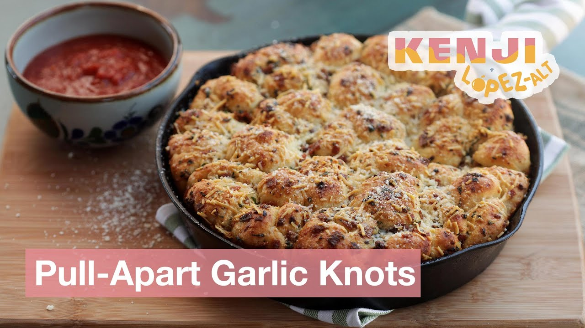

Kenji López-Alt's pull-apart pepperoni garlic knots: 24 knots of pizza dough tossed in pepperoni-garlic butter and baked snug in a cast-iron skillet until the bottoms are nearly deep-fried. Store-bought dough is genuinely fine here — the flavorings shout over it.
Melt the butter with the oil in a 10" cast-iron skillet over medium. Add the pepperoni and cook, stirring, until it starts to crisp, about 2 minutes. Pepper flakes and garlic in for 1 minute, then the herbs. Scrape into a big bowl and stir in the Parmesan. Do not wipe out the skillet — that fat bakes into the bread.
Halve the dough. Roll each half into an oblong about 8"×4" on a floured counter and cut crosswise into 12 strips — 24 total. Tie each strip into a loose knot. Uneven ones just mean someone gets the big poofy one.
Tumble the knots in the pepperoni butter until every surface is coated, then pack them into the skillet in a single layer. Drizzle with more olive oil, cover tightly, and rise until doubled, about 4 hours at room temp — or 12–16 hours in the fridge for better flavor.
Heat the oven to 425°F, rack centered. Uncover, sprinkle with the Romano, and bake until golden brown and crisp, 25–30 minutes.
Straight out of the oven, brush with olive oil and shower with fresh Parmesan — the Di Fara move. Serve hot from the skillet with warm sauce, and warn people about the handle.